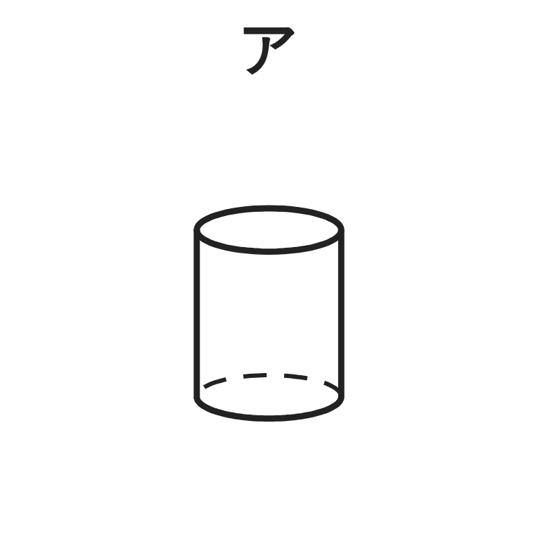
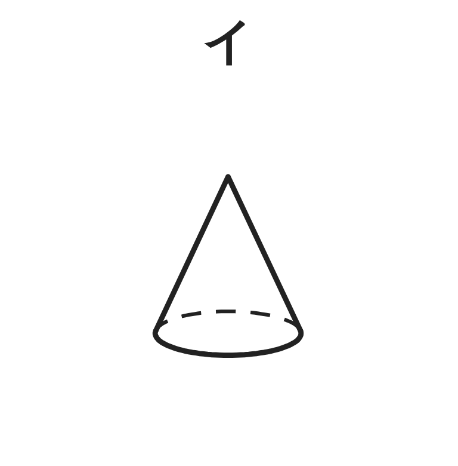
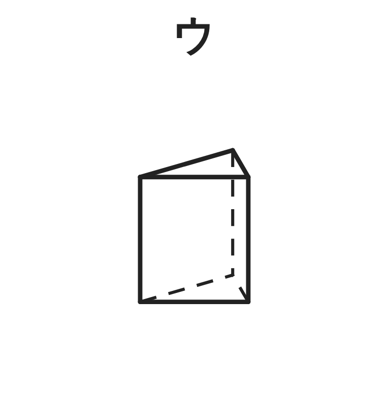
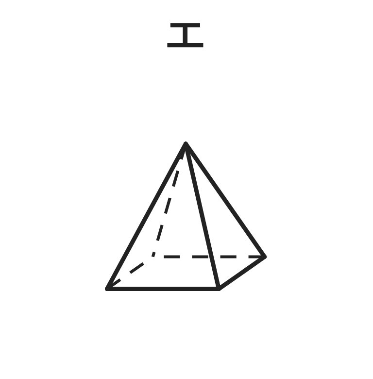
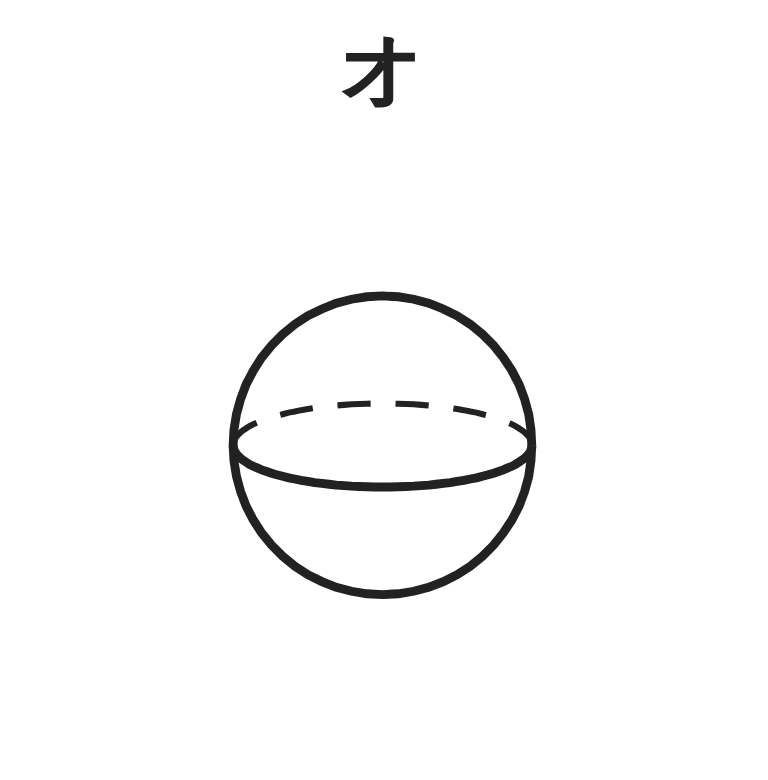
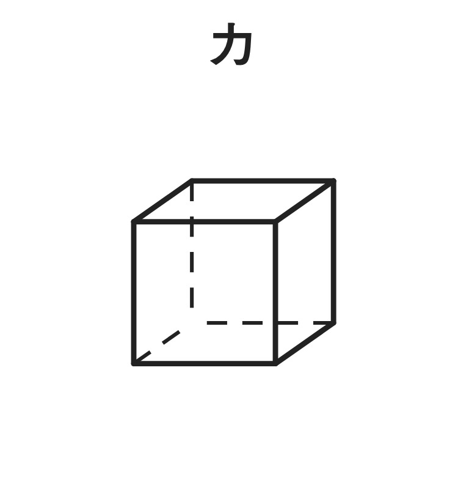

ペア学習
第8時 ヒントを組み合わせて、立体を当てよう（立体当てクイズ）
1人1問ずつ、出題し合う。ことばの意味を、自分の言葉で言う。
展開図
円周
おうぎ形
母線
空間図形 第8時 ヒントを組み合わせて、立体を当てよう（立体当てクイズ）
めあて
第8時 ヒントを組み合わせて、立体を当てよう（立体当てクイズ）
学習課題
先生が出すヒントを聞いて、ア〜カの中から、立体を1つ当てよう。
ヒント1 … 面が 5つある。
ヒント2 … 側面は、すべて三角形である。






【ヒント1だけで、あてはまる立体】 【ヒント2もあわせると】答えと、そう言える理由
空間図形 第8時 ヒントを組み合わせて、立体を当てよう（立体当てクイズ）
学習課題のまとめ
第8時 ヒントを組み合わせて、立体を当てよう（立体当てクイズ）
ヒント1 … 面が 5つある。 ヒント2 … 側面は、すべて三角形である。
ヒント1だけで、あてはまる立体
ウ 三角柱、エ 四角錐
ヒント2もあわせると
エ 四角錐
理由 … 面が 5つなのは、三角柱と四角錐。
側面が三角形なのは、角錐だから。
空間図形 第8時 ヒントを組み合わせて、立体を当てよう（立体当てクイズ）
ことば
第8時 ヒントを組み合わせて、立体を当てよう（立体当てクイズ）
立体を、見えるように表した図を 、
切り開いた図を という。
正面から見た図を 、真上から見た図を という。
立面図と平面図をあわせた図を という。
平面図形を、直線を軸に 1回転させてできる
立体を という。
空間図形 第8時 ヒントを組み合わせて、立体を当てよう（立体当てクイズ）
ことば
第8時 ヒントを組み合わせて、立体を当てよう（立体当てクイズ）
立体を、見えるように表した図を 見取図、
切り開いた図を 展開図 という。
正面から見た図を 立面図、真上から見た図を 平面図 という。
立面図と平面図をあわせた図を 投影図 という。
平面図形を、直線を軸に 1回転させてできる
立体を 回転体 という。
空間図形 第8時 ヒントを組み合わせて、立体を当てよう（立体当てクイズ）
例題
第8時 ヒントを組み合わせて、立体を当てよう（立体当てクイズ）
4つの立体の見え方などを調べて、表を完成させよう。
（底面を下にして置く）
| 立体 | 円柱 | 円錐 | 正四角錐 | 球 |
|---|---|---|---|---|
| 立面図 | 長方形 | |||
| 平面図 | 円 | |||
| 展開図 | 長方形1・円2 | |||
| 回転体か | ○ |
【しぼりこみ】表を使って、円錐に決まるヒントを2つ書こう。
（1つ目では決まらないように）
空間図形 第8時 ヒントを組み合わせて、立体を当てよう（立体当てクイズ）
例題 解答
第8時 ヒントを組み合わせて、立体を当てよう（立体当てクイズ）
| 立体 | 円柱 | 円錐 | 正四角錐 | 球 |
|---|---|---|---|---|
| 立面図 | 長方形 | 二等辺三角形 | 二等辺三角形 | 円 |
| 平面図 | 円 | 円 | 正方形 （対角線入り） | 円 |
| 展開図 | 長方形1・円2 | おうぎ形1・円1 | 三角形4・正方形1 | かけない |
| 回転体か | ○ | ○ | × | ○ |
しぼりこみ
（例）ヒント1 … 平面図は、円である。（円柱・円錐・球）
ヒント2 … 展開図に、おうぎ形がある。（円錐に決まる）
空間図形 第8時 ヒントを組み合わせて、立体を当てよう（立体当てクイズ）
考えよう
第8時 ヒントを組み合わせて、立体を当てよう（立体当てクイズ）
①
「立面図は長方形」にあてはまる立体を、できるだけたくさんあげよう。
②
そのうち1つを選んで、1つに決まるヒントを、もう1つ書こう。
③
【自分たちの問題】答えの立体と、ヒントを3つ書こう。
1つ目のヒントだけでは、決まらないようにしよう。
④
友達の問題に答えよう。答えの理由（なぜそう言えるか）も書こう。
（1つ目で当てたら3点、2つ目で2点、3つ目で1点）
⑤
よいヒントとは、どんなヒントだろう。
空間図形 第8時 ヒントを組み合わせて、立体を当てよう（立体当てクイズ）
振り返り
第8時 ヒントを組み合わせて、立体を当てよう（立体当てクイズ）
今日のめあて
見取図
展開図
立面図
平面図
投影図
回転体
今日わかったことを、ペアで1つずつ言い合おう。
ワークシートと演習プリントを出そう。（未完成でも出す）
空間図形 第8時 ヒントを組み合わせて、立体を当てよう（立体当てクイズ）